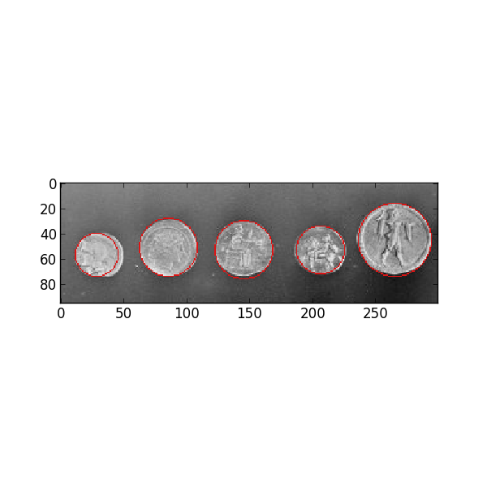

The Hough transform in its simplest form is a method to detect straight lines but it can also be used to detect circles.
In the following example, the Hough transform is used to detect coin positions and match their edges. We provide a range of plausible radii. For each radius, two circles are extracted and we finally keep the five most prominent candidates. The result shows that coin positions are well-detected.
Given a black circle on a white background, we first guess its radius (or a range of radii) to construct a new circle. This circle is applied on each black pixel of the original picture and the coordinates of this circle are voting in an accumulator. From this geometrical construction, the original circle center position receives the highest score.
Note that the accumulator size is built to be larger than the original picture in order to detect centers outside the frame. Its size is extended by two times the larger radius.
import numpy as np
import matplotlib.pyplot as plt
from skimage import data, filter, color
from skimage.transform import hough_circle
from skimage.feature import peak_local_max
from skimage.draw import circle_perimeter
# Load picture and detect edges
image = data.coins()[0:95, 70:370]
edges = filter.canny(image, sigma=3, low_threshold=10, high_threshold=50)
fig, ax = plt.subplots(ncols=1, nrows=1, figsize=(6, 6))
# Detect two radii
hough_radii = np.arange(15, 30, 2)
hough_res = hough_circle(edges, hough_radii)
centers = []
accums = []
radii = []
for radius, h in zip(hough_radii, hough_res):
# For each radius, extract two circles
peaks = peak_local_max(h, num_peaks=2)
centers.extend(peaks - hough_radii.max())
accums.extend(h[peaks[:, 0], peaks[:, 1]])
radii.extend([radius, radius])
# Draw the most prominent 5 circles
image = color.gray2rgb(image)
for idx in np.argsort(accums)[::-1][:5]:
center_x, center_y = centers[idx]
radius = radii[idx]
cx, cy = circle_perimeter(center_y, center_x, radius)
image[cy, cx] = (220, 20, 20)
ax.imshow(image, cmap=plt.cm.gray)
plt.show()
Python source code: download (generated using skimage 0.8.0)